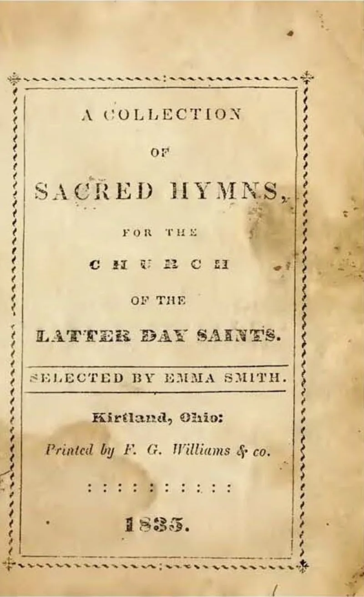
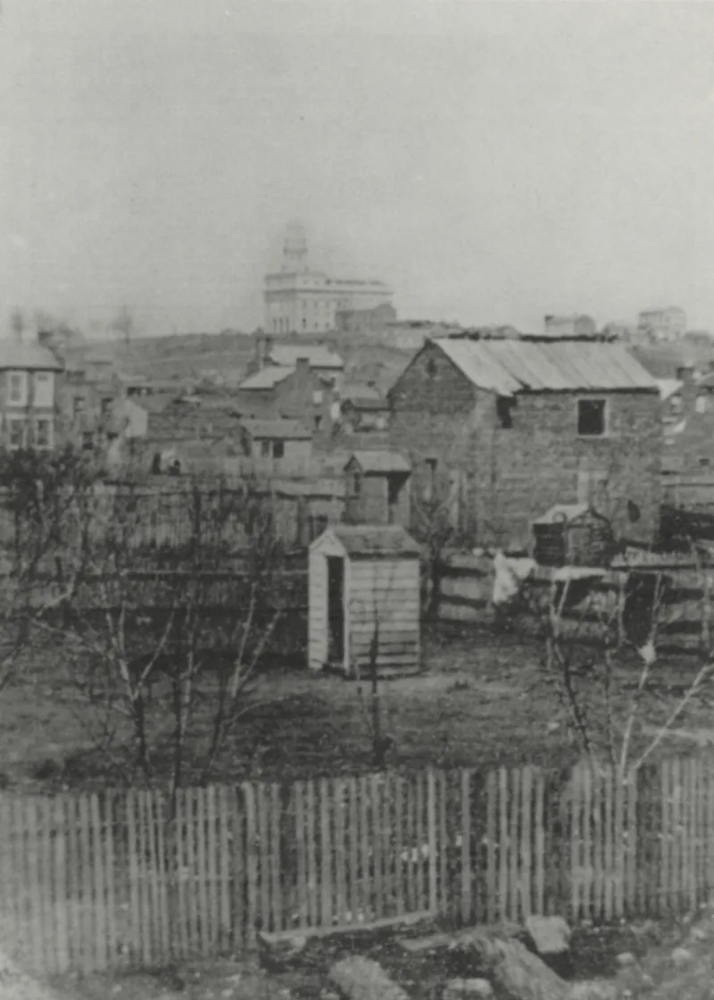

Their own church publications admit these facts. You can make this point from LDS sources alone.
D&C 132, dictated on 12 July 1843. It is still canonised scripture.
You can read it in any current Doctrine and Covenants.
It names her. Verse 52 commands her to "receive all those that have been given unto my servant Joseph." Verse 54 warns that "if she will not abide this commandment she shall be destroyed, saith the Lord." Verse 64 extends that to any first wife who refuses consent.
It was dictated after Smith had already married most of his plural wives. Emma did not know, and had not consented.
That "destroyed" is covenant language, not physical death — losing the blessings of the covenant, as in verse 26. And no harm came to Emma.
She refused, burned her copy, and stayed his wife. The section is framed as an Abrahamic test, and it promises her blessings for obedience too.
Richard Bushman notes it was written down at Hyrum's request, precisely to persuade her. That is a family crisis, not a death threat.
They admit the text, and nobody disputes it. The softer reading of "destroyed" is plausible.
It does not change what the verse does. Canonised scripture makes a named woman's standing depend on accepting her husband's other wives.
Read Ephesians 5:25 beside it and let it sit.
"Can we read D&C 132:52-54 together? I'd like to know how you hear it."


'Destroyed' is covenant language, and Emma refused and came to no harm.
Apologists read 'destroyed' as covenant language rather than physical death. It means losing the blessings of the covenant, as verse 26 shows.
They note that no harm ever came to Emma. She refused, burned her copy of the revelation, and remained Smith's wife.
The revelation is framed as an Abrahamic test, and the verses addressing Emma also promise blessings for obedience. Richard Bushman notes that it was written down at Hyrum's request, specifically to persuade her.
On that reading it reflects a crisis in a household, not a death threat.
They admit the text: the softer reading is fair, but the verse still stands.
The text and its place in the canon are not disputed. Anyone can read it in the current Doctrine and Covenants.
The softened reading of 'destroyed' is a plausible gloss. It does not change what the section does.
Canonised scripture makes a named woman's fate turn on accepting her husband's other wives. Verse 52 commands it. Verse 54 warns her. Verse 64 extends that to any first wife who refuses.